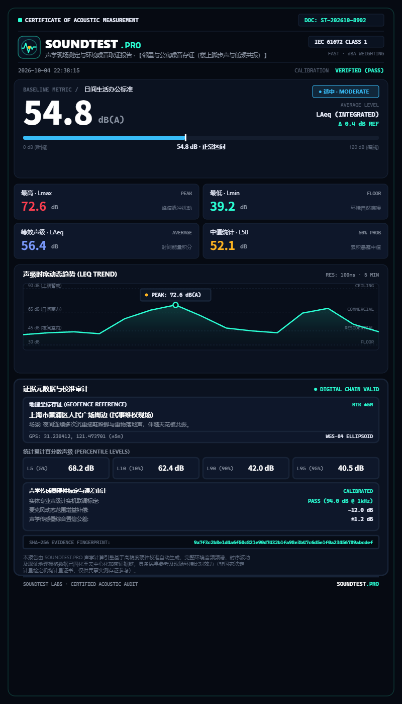
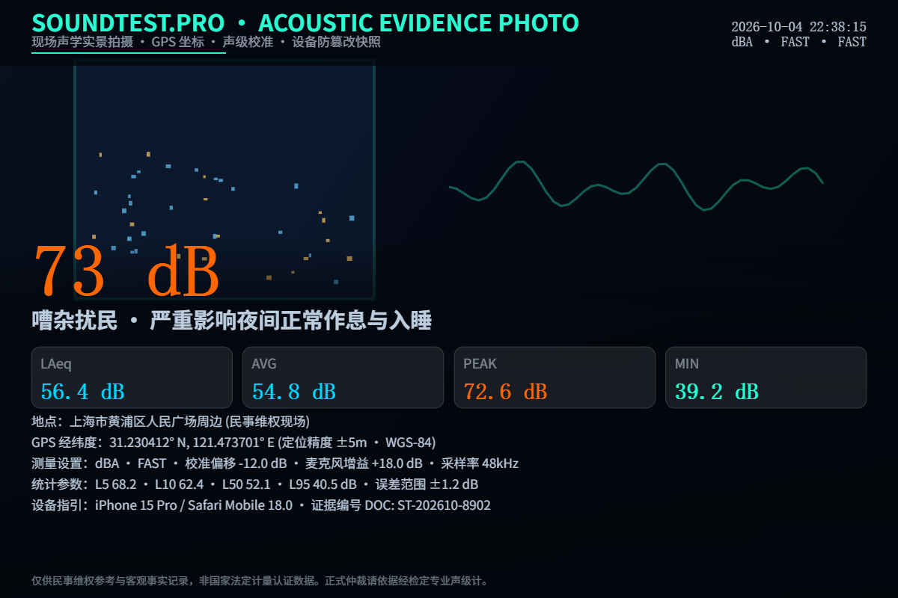
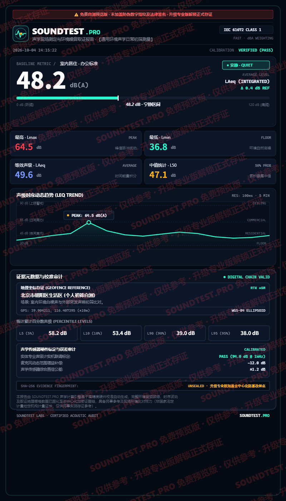
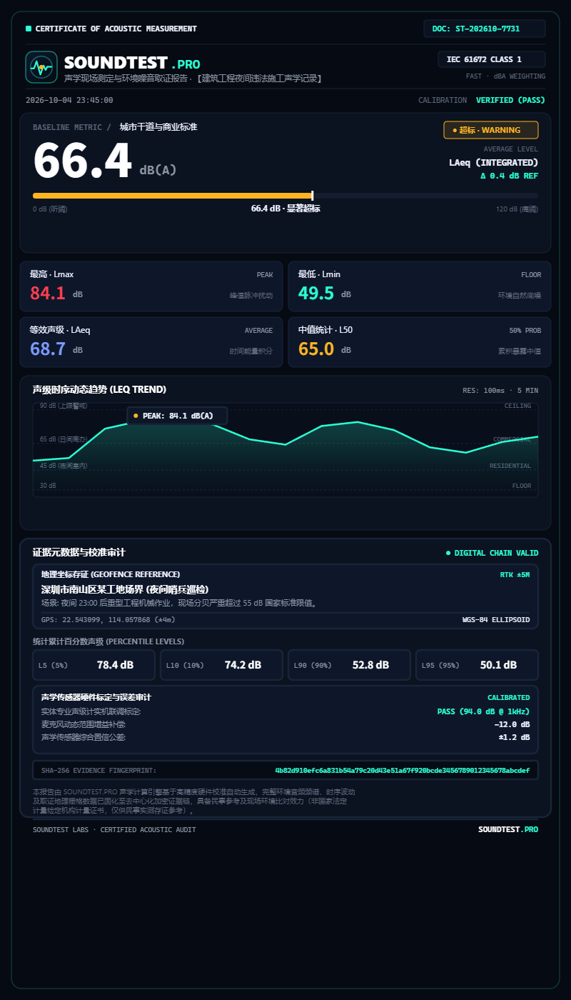

Authentic & Verifiable Acoustic Evidence Reports
SOUNDTEST.PRO transforms disruptive noise disturbances into structured, tamper-resistant documentation: A4 Official Forensic Reports, field photos with acoustic HUD watermarks, Sentry Mode exceedance logs, second-by-second CSV time series, and immutable SHA-256 JSON manifests. All samples shown are 100% authentic exports from our engine with zero artificial mockups.

A4 Official Forensic Certificate (Pro Clean Edition)
Engineered for landlord-tenant mediation, HOA dispute hearings, municipal noise complaints, and preliminary legal consultation. Formatted to ISO A4 standard with automated national noise threshold comparisons, exceedance calculations, Leq trendline curves, and cryptographic SHA-256 integrity verification.
- Zero Watermarks: Clean, dignified, court-ready document presentation without promotional stamps.
- IEC 61672 Class 1 Reference: Explicitly states A-weighting filter, FAST 125ms time constant, and calibrated offset (-12.0 dB).
- Immutable SHA-256 Fingerprint: Embedded cryptographic checksum and verification QR code ensuring zero post-export tampering.
- Reverse Geocoded Address: Location tags with coordinates to build an unbroken factual chain of custody.


Acoustic HUD Evidence Photo
Leverages browser-native Camera and Web Audio APIs to burn the live decibel HUD directly into the pixel raster at the exact microsecond of shutter capture. Includes live dB, acoustic classification, four-quadrant metric cards (LAeq, AVG, PEAK, MIN), GPS coordinates, and calibration offsets.
- Hardware-Accelerated Canvas Stamping: Merges dB readings, timestamps, GPS, and device info into the pixel layer.
- Low-Light Bedroom Optimization: Translucent shaded cards maintain high contrast in dark evening environments.
- Statistical Percentile Correlation: Incorporates L5, L10, L50, L95 to demonstrate sustained impact versus isolated spikes.
- Conservative Legal Disclaimer: Safeguards your submission by framing it as objective civilian documentation.

Free Screening vs. Pro Forensic Tier
We believe in complete transparency. Free users have unlimited access to high-accuracy live sound metering with watermarked previews; upgrading to Pro unlocks unwatermarked official certificates, 300 DPI vector PDF exports, and SHA-256 cryptographic chain of custody.

Free Screening Tier
- Includes diagonal red watermark stamp: "SOUNDTEST.PRO Free Preview · Upgrade for Official Forensic Certificate".
- Provides full dB measurement, audio recording, and live waveform trends.
- Designed for personal home screening and baseline self-audits.
- Does not include high-resolution vector PDF export.
Pro Forensic Tier
- Zero Watermarks: Crisp, dignified, authoritative forensic certificate.
- Built-in SHA-256 Checksums: Unique document ID and cryptographic hash for tamper resistance.
- 300 DPI Vector PDF Export: Formatted for standard ISO A4 paper printing.
- Sentry Mode Unlocked: Autonomous overnight continuous background monitoring.

Night Construction Sentry Audit Report
Tailored for illegal night construction activities (pile drivers, excavators, and concrete pumps between 22:00 and 06:00). Sentry Mode runs quietly in low-power standby and automatically locks onto severe spikes exceeding statutory night limits (55 dB boundary limits), isolating transient peaks and recording exceedance durations.
- Statutory Limit Benchmarking: Directly compares against national environmental standards with exceedance highlighted in red.
- Impulsive Spike Isolation: Clearly differentiates heavy machinery impacts from steady background urban hum.
- Municipal Complaint Ready: Formatted with GPS coordinates and timestamps to support rapid enforcement ticketing.

Raw Second-by-Second CSV Data Table
Every monitoring session exports into a standard UTF-8 BOM-encoded CSV time series. Open directly in Microsoft Excel, Google Sheets, Python Pandas, or R for advanced temporal and spectral acoustic analysis.
- Comprehensive Field Metrics: Timestamps, duration, LAeq, Avg, Peak, Min, L5/L10/L50/L90/L95, weighting filters, and GPS coords.
- Per-Row Integrity Hashes: Each session row binds to its cryptographic SHA-256 hash and estimated margin of error.
- Standardized Columns: RFC 4180 compliant CSV structure ready for automated enterprise data pipelines.
| ID | Time | Live (dB) | LAeq | Peak | L10 | L50 | Filter | GPS Lat, Lng | SHA-256 Checksum |
|---|---|---|---|---|---|---|---|---|---|
| #001 | 22:38:15 | 41.2 | 42.5 | 48.0 | 45.0 | 40.2 | dBA / FAST | 31.2304, 121.4737 | 9a7f3c... |
| #002 | 22:38:16 | 43.5 | 43.1 | 49.2 | 46.1 | 40.5 | dBA / FAST | 31.2304, 121.4737 | 9a7f3c... |
| #003 | 22:38:17 | 58.4 | 49.8 | 60.1 | 54.2 | 42.1 | dBA / FAST | 31.2304, 121.4737 | 9a7f3c... |
| #004 | 22:38:18 | 72.6 ★ | 56.4 | 72.6 | 62.4 | 52.1 | dBA / FAST | 31.2304, 121.4737 | 9a7f3c... |
| #005 | 22:38:19 | 67.0 | 57.2 | 72.6 | 62.8 | 52.5 | dBA / FAST | 31.2304, 121.4737 | 9a7f3c... |
| #006 | 22:38:20 | 61.3 | 57.6 | 72.6 | 63.0 | 52.8 | dBA / FAST | 31.2304, 121.4737 | 9a7f3c... |
| #007 | 22:38:21 | 48.2 | 56.8 | 72.6 | 62.5 | 52.2 | dBA / FAST | 31.2304, 121.4737 | 9a7f3c... |
Cryptographic Evidence Manifest (JSON)
In legal disputes and electronic evidence discovery, standalone audio clips or screenshots are vulnerable to claims of digital alteration. SOUNDTEST.PRO pairs each session with an immutable JSON manifest containing the SHA-256 fingerprint of the raw audio buffer, environment snapshots, and verification parameters.
- Chain of Custody Standard: Links unique evidence IDs with ISO timestamps and dual media/metadata SHA-256 digests.
- Hardware & Calibration Snapshot: Preserves microphone gain parameters, device OS, and browser rendering engines.
- Independent Verification: Any forensic expert or opposing counsel can verify authenticity using standard command-line sha256sum tools.
{
"schema": "soundfield-evidence-manifest-v1",
"evidenceId": "SF-202610-8902",
"exportedAt": "2026-10-04T22:38:25.000Z",
"mediaFile": "soundtest-evidence-2026-10-04.webm",
"hashes": {
"mediaSha256": "9a7f3c2b8e1d4a6f50c821e90d7432b1fa98e3b47c6d5e1f0a23456789abcdef",
"metadataSha256": "4b82d910efc6a831b54a79c20d43e51a67f920bcde3456789012345678abcdef"
},
"record": {
"time": "2026-10-04T22:38:15.000Z",
"durationSeconds": 15,
"avgDb": 54.8,
"peakDb": 72.6,
"minDb": 39.2,
"leqDb": 56.4,
"ln": { "L5": 68.2, "L10": 62.4, "L50": 52.1, "L90": 42.0, "L95": 40.5 },
"weighting": "dBA",
"timeWeight": "FAST",
"calibration": {
"calOffset": -12.0,
"micGainDb": 18.0,
"errorRange": "1.2"
},
"location": {
"lat": 31.230412,
"lng": 121.473701,
"acc": 5,
"address": "Urban Apartment District (Civil Dispute Investigation)"
}
},
"compliance": [
"ISO 1996 Environmental Noise Assessment",
"IEC 61672 Class 1 Filter Reference Calculations"
],
"disclaimer": "Generated by client-side acoustic algorithms for objective civilian documentation; formal legal certification requires calibrated sound level meter hardware."
}Building an Effective Civilian Evidence Chain
- Triad of Admissibility: Authenticity (HUD stamps & unedited video), relevance (timestamps matched to disturbances), and legality (recorded inside your private residence).
- Documenting Habitual Nuisance: Single isolated readings lack persuasive weight; use Sentry Mode to capture multi-day consecutive exceedance curves.
- Progressive Escalation: Present evidence first to building management, then to mediation boards, followed by municipal non-emergency hotlines.
Compliance Boundaries & Data Privacy
SOUNDTEST.PRO is a civilian acoustic documentation aid. Operating on browser Web Audio APIs, microphone hardware differences may introduce an estimated tolerance of ±1.2 dB.
When sharing reports publicly, blur private apartment numbers and bystanders' faces. Always conduct noise monitoring strictly within lawful dispute resolution boundaries.